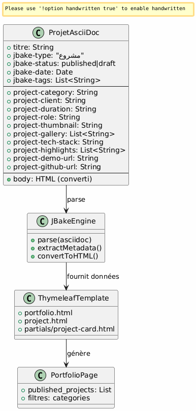
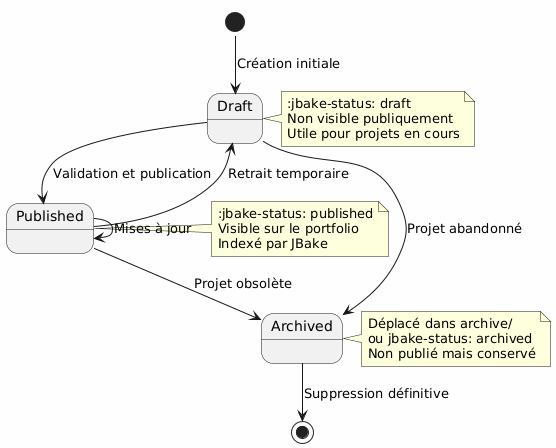
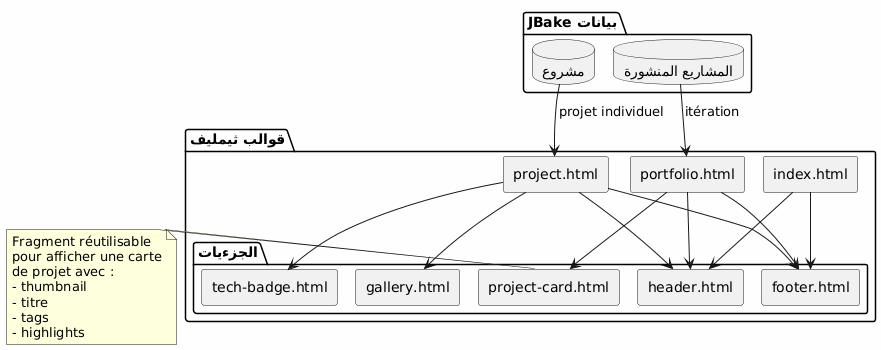
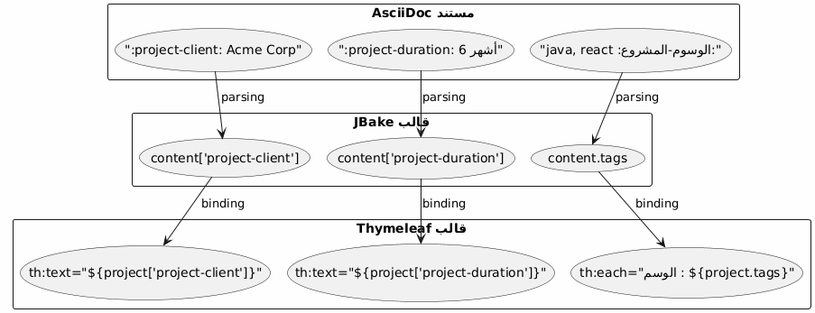
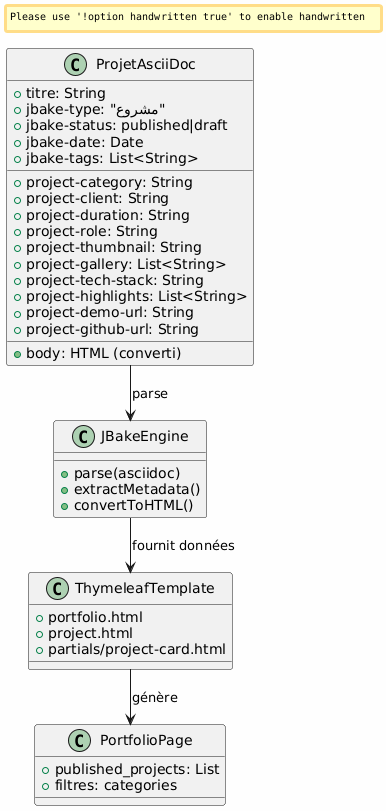
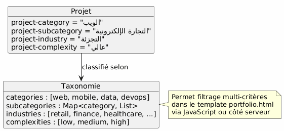

Architecture Portfolio JBake - الرؤية وحالات الاستخدام
Publié le 15 January 2026
الرؤية المعمارية
مبدأ توجيهي
البنية تقوم على مبدأ فصل المخاوف:
-
المحتوى : ملفات AsciiDoc منظمة مع بيانات تعريفية غنية
-
عرض : قوالب Thymeleaf القابلة لإعادة الاستخدام
-
البيانات : النموذج المستخرج تلقائيًا بواسطة JBake من سمات AsciiDoc
-
النمط: Bootstrap 5 للتّوافق البصري
الخيار الاستراتيجي : AsciiDoc للملف الشخصي
| معيار | ميزة |
|---|---|
الاتساق |
نفس تنسيق مقالات المدونة |
البيانات الوصفية |
السمات المنظمة والقابلة للتوسيع ( |
قابلية الصيانة |
تحرير نصّي بسيط، قابل للتتبع بـ جيت |
المرونة |
قد يحتوي على محتوى غني (جداول، كود، صور) |
القوالب |
JBake يستخرج الخصائص تلقائيًا ل Thymeleaf |
نموذج البيانات
كل مشروع محفظة هو مستند AsciiDoc مع :
-
بيانات الرأس : معلومات منظمة (العميل، المدة، التقنيات، إلخ)
-
جسم المستند : وصف سردي، التحديات، الحلول، النتائج
-
السمات المخصصة: مسبوقة`project-*`للاستخراج التلقائي

حالات الاستخدام المفصلة
UC1 : إضافة عنصر إلى المحفظة
التدفق الاسمي
Failed to generate image: PlantUML preprocessing failed: [From <input> (line 4) ] @startuml skinparam backgroundColor #FEFEFE actor Développeur as dev participant "مُحرّر ^^^^^ Syntax Error? (Assumed diagram type: sequence) @startuml skinparam backgroundColor #FEFEFE actor Développeur as dev participant "مُحرّر نص" as editor participant "ملف AsciiDoc" as file participant "JBake محرك" as jbake participant "موقع ثابت" as site dev -> editor : Créer nouveau fichier activate editor editor -> file : portfolio/nouveau-projet.adoc activate file dev -> editor : Rédiger en-tête avec métadonnées\n(titre, type=project, status=published,\nattributs project-*) dev -> editor : Rédiger contenu narratif\n(contexte, défis, solutions) dev -> editor : Ajouter images dans assets/img/portfolio/ editor -> file : Sauvegarder deactivate editor dev -> jbake : Lancer build (jbake -b) activate jbake jbake -> file : Lire et parser jbake -> jbake : Extraire métadonnées jbake -> jbake : Convertir AsciiDoc → HTML jbake -> jbake : Appliquer template project.html jbake -> jbake : Ajouter à la liste portfolio.html jbake -> site : Générer pages statiques deactivate jbake dev -> site : Vérifier résultat activate site site --> dev : Afficher projet deactivate site @enduml
قالب الملف المراد إنشاؤه
المطور ينشئ`content/portfolio/nom-projet.adoc`مع بنية موحدة:
-
رأس مع جميع الخصائص المطلوبة
-
الأقسام المعيارية (السياق، التحديات، الحلول، النتائج)
-
التسمية المتسقة للصور
نقاط التحقق
-
السمات الإلزامية موجودة (
jbake-type,jbake-status,project-thumbnail) -
الصور المشار إليها موجودة في`assets/img/portfolio/`
-
ينجح build JBake بدون أي خطأ
-
يظهر المشروع على صفحة المحفظة
-
تعرض صفحة المشروع الفردية بشكل صحيح
UC2 : حذف عنصر من المحفظة
التدفق الاسمي
Failed to generate image: PlantUML preprocessing failed: [From <input> (line 4) ] @startuml skinparam backgroundColor #FEFEFE actor Développeur as dev participant "نظام ^^^^^ Syntax Error? (Assumed diagram type: sequence) @startuml skinparam backgroundColor #FEFEFE actor Développeur as dev participant "نظام ملفات" as fs participant "JBake Engine" as jbake participant "موقع ثابت" as site database "ذاكرة JBake" as cache dev -> fs : Supprimer portfolio/projet-ancien.adoc activate fs fs --> dev : Fichier supprimé deactivate fs dev -> fs : (Optionnel) Supprimer images associées\nassets/img/portfolio/projet-ancien-* activate fs fs --> dev : Images supprimées deactivate fs dev -> cache : Nettoyer cache JBake activate cache cache --> dev : Cache vidé deactivate cache dev -> jbake : Rebuild complet (jbake -b) activate jbake jbake -> jbake : Scanner content/portfolio/ jbake -> jbake : Projet absent → non généré jbake -> jbake : Régénérer portfolio.html\n(sans le projet supprimé) jbake -> site : Déployer nouveau build deactivate jbake dev -> site : Vérifier activate site site --> dev : Projet absent de la liste deactivate site @enduml
الاستراتيجية البديلة: الأرشفة
بدلاً من الحذف النهائي، إمكانية إنشاء مجلد`content/portfolio/archive/`: (espace après les deux-points conservé tel quel)
-
انقل الملف بدلاً من حذفه
-
يسمح بالاستعادة بسهولة
-
احتفظ بتاريخ جيت أكثر وضوحًا
تنظيف الموارد
-
التحقق من الصور اليتيمة في`assets/img/portfolio/`
-
احذف الصور غير المُحالة من قبل مشاريع أخرى
-
تنظيف ذاكرة التخزين المؤقت لـ JBake لتجنب المراجع الوهمية
UC3 : وضع في غير منشور (مسودة)
التدفق الاسمي
Failed to generate image: PlantUML preprocessing failed: [From <input> (line 5) ] @startuml skinparam backgroundColor #FEFEFE actor Développeur as dev participant "ملف\nAsciiDoc" as file participant "JBake ^^^^^ Syntax Error? (Assumed diagram type: sequence) @startuml skinparam backgroundColor #FEFEFE actor Développeur as dev participant "ملف\nAsciiDoc" as file participant "JBake محرك" as jbake participant "موقع ثابت" as site dev -> file : Ouvrir portfolio/projet.adoc activate file dev -> file : Modifier attribut\n:jbake-status: published\n↓\n:jbake-status: draft file --> dev : Sauvegardé deactivate file dev -> jbake : Rebuild (jbake -b) activate jbake jbake -> file : Parser le fichier jbake -> jbake : Détecter status=draft jbake -> jbake : Exclure de published_projects jbake -> jbake : Ne pas créer page publique note right Le projet existe toujours mais n'est pas publié end note jbake -> site : Générer site (sans ce projet) deactivate jbake dev -> site : Vérifier portfolio activate site site --> dev : Projet absent de la liste publique deactivate site @enduml
الحالات الممكنة

حالات الاستخدام النموذجية
-
مشروع جاري صياغته : إنشاء مسودة، نشر عندما يكون جاهزًا
-
مشروع سري مؤقت : التحويل إلى مسودة خلال فترة اتفاق العميل
-
تحديث رئيسي : التحويل إلى مسودة، تعديل، إعادة النشر
-
A/B testing : إنشاء نسخة مسودة، اختبارها، ثم نشر أفضل نسخة
هندسة القوالب
استراتيجية القوالب القابلة لإعادة الاستخدام

نمط استخراج البيانات
JBake يحول تلقائيًا سمات AsciiDoc إلى خصائص يمكن الوصول إليها في Thymeleaf:

اتفاقيات التسمية
-
سمات المشروع : البادئة`project-*` (ex:
project-client,project-tech-stack) -
ملفات : kebab-case (مثال:`ecommerce-platform.adoc`)
-
الصور : بادئة اسم المشروع (مثال:`ecommerce-platform-thumb.jpg`)
-
القوالب : اسم وظيفي (مثال:`project-card.html`,
tech-badge.html)
سير عمل النشر
سلسلة التطوير

بيئات
| بيئة | الاستخدام | الحالة مقبولة |
|---|---|---|
محلي |
التطوير والمعاينة |
مسودة، منشور |
التجهيز |
التحقق المسبق للإنتاج |
نشر فقط |
Production |
موقع عام |
منشور فقط |
قابلية التوسّع
إضافة سمات جديدة
لإثراء نموذج البيانات، ما عليك سوى إضافة سمات جديدة مسبوقة`project-*` :
-
`project-awards`الجوائز والاعترافات
-
project-testimonial: عرض سعر للعميل -
project-team-size: حجم الفريق -
`project-budget-range`نطاق الميزانية
هذه الخصائص تصبح متاحة تلقائيًا في القوالب دون تعديل محرك JBake.
تصنيف متقدم

أفضل الممارسات
تنظيم الملفات
-
ملف واحد = مشروع : تجنب خلط عدة مشاريع
-
صور في مجلد مخصص
assets/img/portfolio/nom-projet/ -
النومينكلاتور المتسقة : يسهّل البحث والصيانة
-
Versioning Git : المتابعة الكاملة للتعديلات
إدارة المحتوى
-
الحالة الافتراضية للمسودة : نشر فقط عندما يكون جاهزًا
-
مراجعة قبل النشر : التحقق من الجودة والسرية
-
البيانات الكاملة : ملء جميع الحقول ذات الصلة
-
المحتوى السردي الغني : لا تقتصر على البيانات الوصفية
الأداء
-
تحسين الصور : ضغط قبل الالتزام
-
التقسيم إذا لزم الأمر : إذا >20 مشاريع
-
التحميل المتأخر : صور المعارض تُحمَّل عند الطلب
-
ذاكرة التخزين المؤقت للمتصفح : الرؤوس المناسبة للموارد
خاتمة
تسمح هذه المعمارية:
-
سهولة الاستخدام : إضافة مشروع = إنشاء ملف نصي
-
المرونة : قابلة للتوسيع عبر سمات جديدة
-
قابلية الصيانة : فصل المحتوى عن العرض
-
التتبع : الإصدار الكامل لـ Git
-
الأتمتة : build والنشر المستمر ممكنين
اختيار AsciiDoc يضمن التوافق مع بقية الموقع مع توفير ثراء البيانات الوصفية اللازمة لمحفظة احترافية.